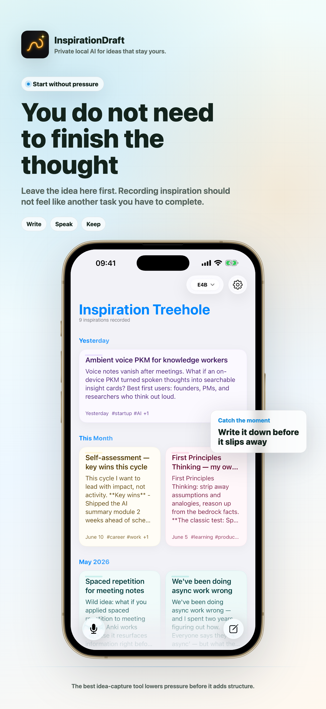
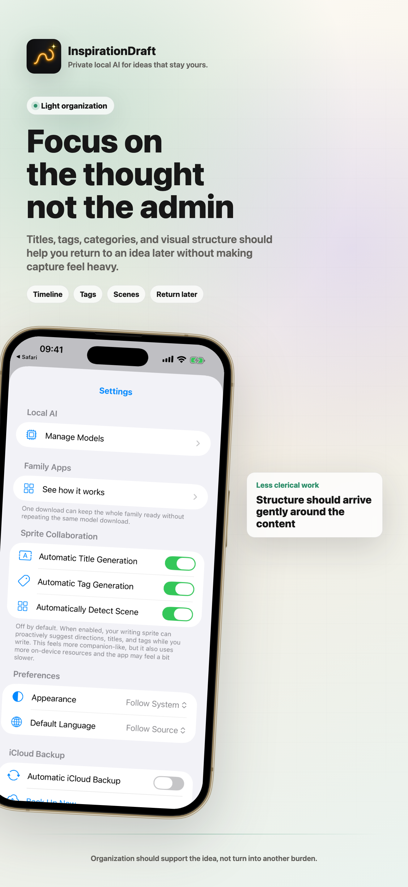
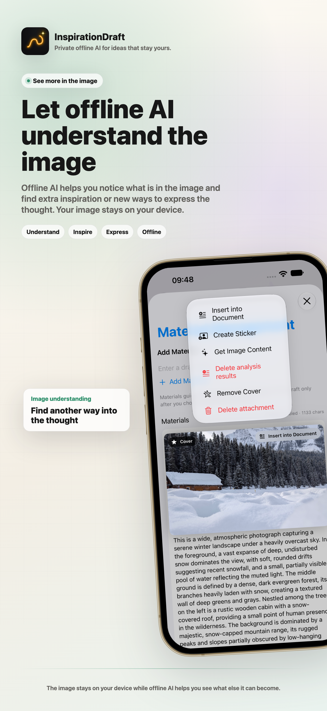
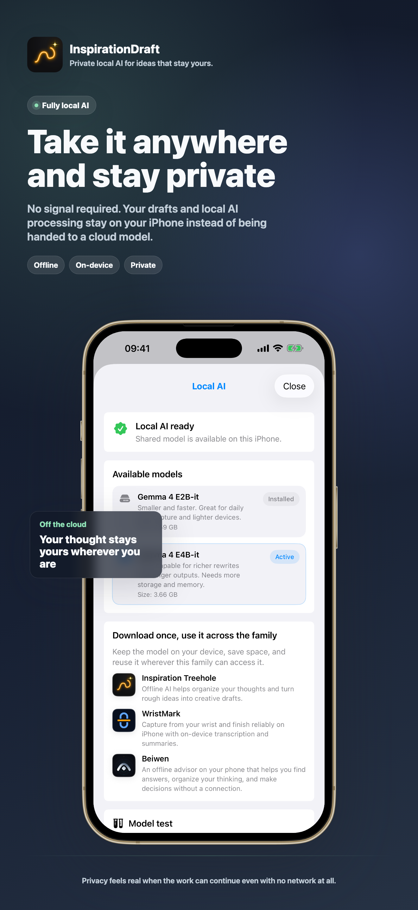
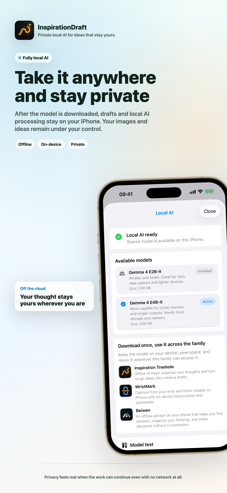
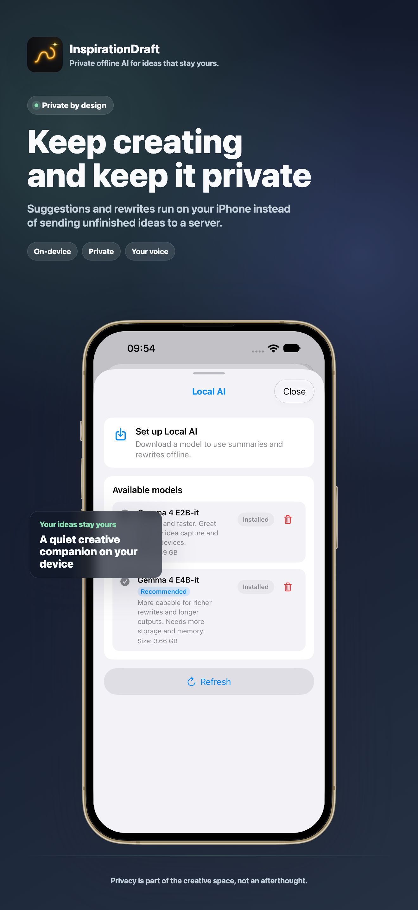

You do not need
to finish the thought
Leave the idea here first. Recording inspiration should not feel like another task you have to complete.
Start with less pressure, then let structure arrive when it helps.

When a spark needs room
let offline AI open a door
Five gentle ways to keep creating when the first thought is not finished. Offline AI offers a direction, not a replacement for your voice.
- Extend: Add texture, detail, or a possible continuation without forcing the idea to conclude.
- Change angle: Look at the same spark from another person, time, scale, or point of view.
- Make concrete: Move from atmosphere to specifics: a scene, an example, a constraint, or a testable detail.
- Next step: Turn a vague impulse into one small action that gives the idea somewhere to go.
- Ask back: Let a well-placed question reveal what the spark is really trying to become.
The model helps you find a way forward while the spark, the choice, and the final direction remain yours.

Let offline AI
understand the image
Offline AI helps you notice what is in the image and find extra inspiration or new ways to express the thought. Your image stays on your device.
- Get Image Content: Let offline AI describe what is in the image and open another way into the thought.
- Insert into Document: Bring the useful context into the draft at the point where it matters.
- Create Sticker: Use a derived form only when it helps the idea, without making it the point of the story.
- Delete analysis results: Remove generated interpretation when it no longer belongs.
- Remove Cover: Change the role of the material without deleting the attachment.
- Delete attachment: Remove the material only when you decide it should leave the idea.

Let offline AI explore
without taking over
Try different rewrite directions and keep the candidate that fits. Text can change while the image blocks and the original thought stay protected.
Offline AI opens possibilities; the final wording and direction remain yours.

You decide how far
offline AI goes
Choose whether offline AI only suggests a title, helps organize tags and scenes, or steps in with writing assistance. It can help manage a growing collection of sparks without taking over.
You set the boundary: capture only, organize, or help develop the idea.

Keep creating
and keep it private
Fully local: Suggestions and rewrites run on your iPhone instead of sending your unfinished ideas to a server.
Your voice, your images, and the sparks that are still becoming ideas stay under your control.

Private offline AI
A quiet creative companion
InspirationDraft is designed for people who want help without surrendering authorship. Suggestions and rewrites run on your device. No account, no tracking, no server-side draft processing.